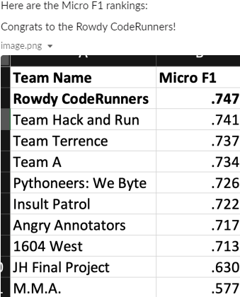
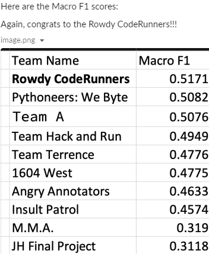

Sentiment Analysis
using python
Given a dataset of Tweets teams were assigned to use python and NLP techniques to determine the proper labels for each tweet (NOT - Not a targeted offense, TIN - Targeted Insult, Untargeted Insult). Working with two other students my team was able to arrive at a 72.7% accuracy when comparing to the training set. Our methods proved to be sucessful as our team ended up getting the highest Micro and Macro scores when the professor compared the results to the test dataset. You can view our full report below

